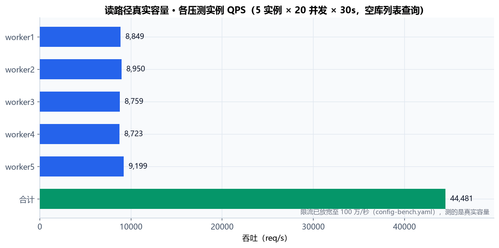
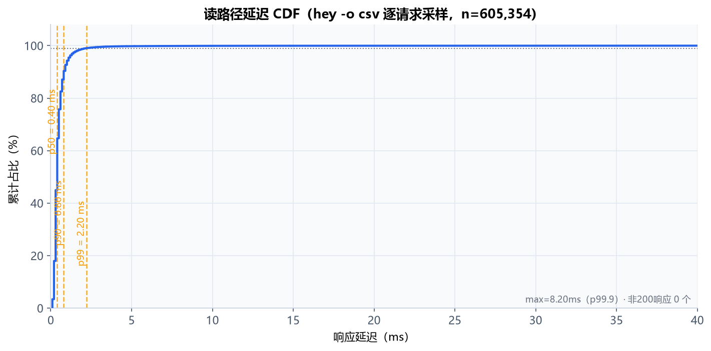
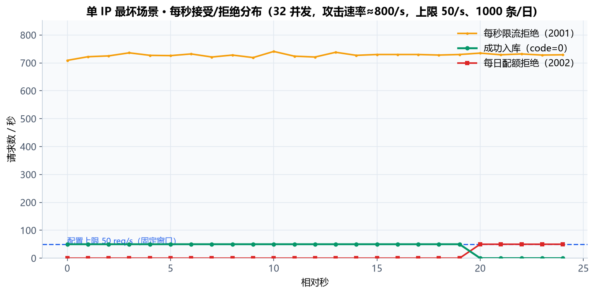
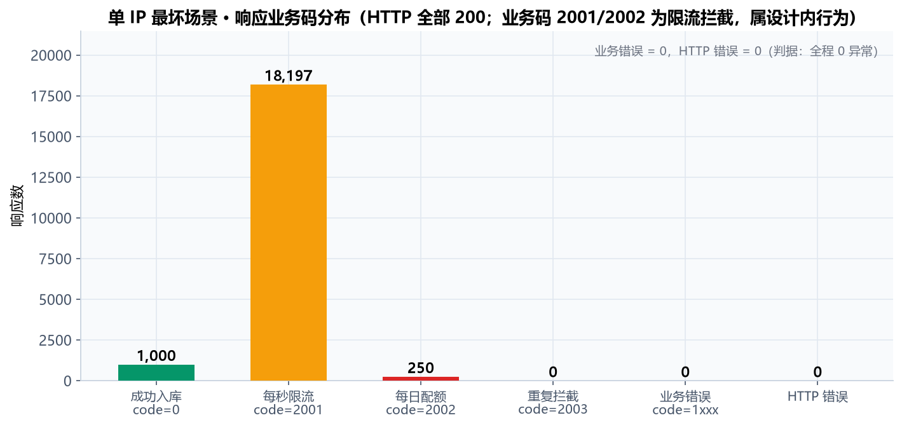
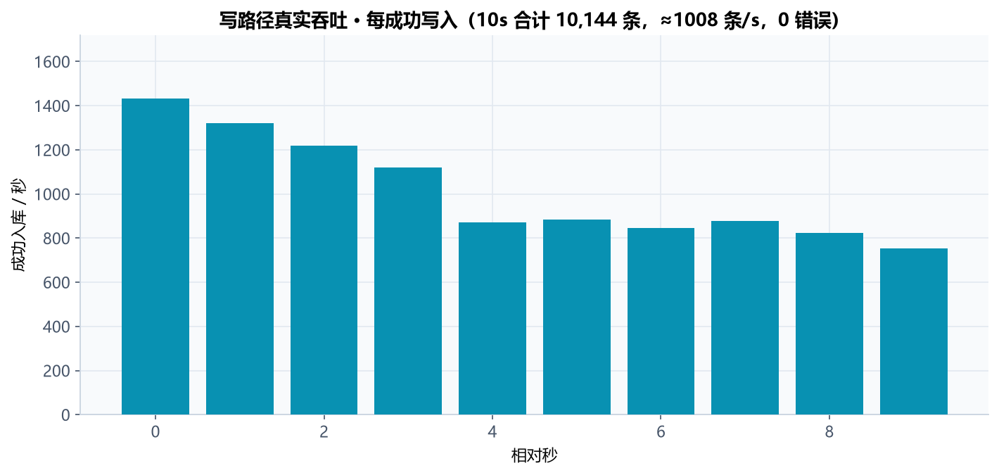
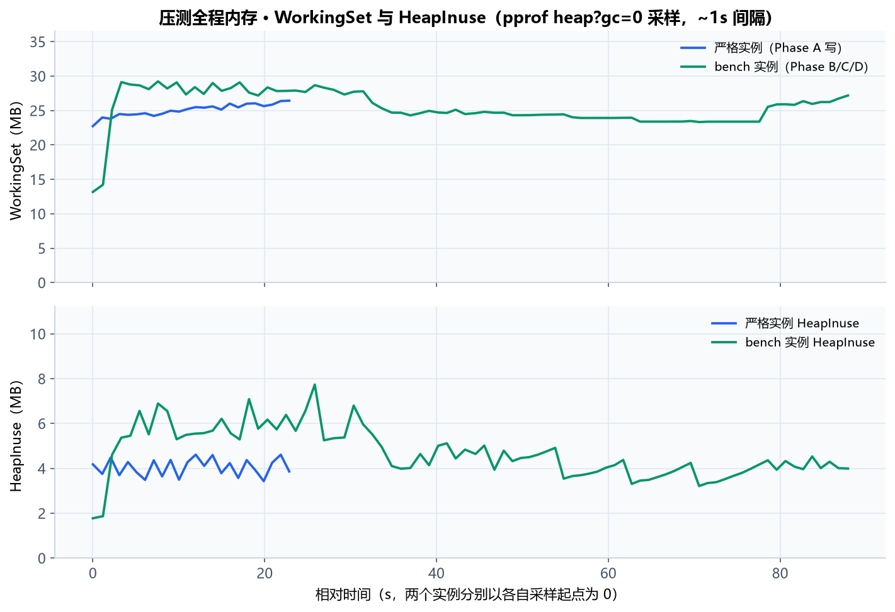

SUMMARY
核心数据一览
| 指标 | 数值 | 说明 |
|---|---|---|
| 读路径吞吐 | ≈ 44,481 req/s | 5 实例合计、限流放宽后的真实容量（旧口径 7.9 万含限流响应，见 §01 口径注） |
| 读路径延迟 | p50 0.4 / p99 2.2 ms | 独立逐请求采样 n=605,354；单实例平均 2.2~2.3 ms |
| 压测峰值内存 | 29.2 MB | 单实例 WorkingSet 峰值（pprof 实测），HeapInuse 峰值 7.7 MB |
| 压测质量 | 0 | 读路径 0 错误 / 写路径 0 业务异常、0 HTTP 错误 / 0 协程泄漏 |
01
本地压测结果（2026-08-13 实测）
口径说明
读接口同样受全局限流约束，被限流的请求仍返回 HTTP 200；早期报告按 HTTP 状态码统计，把限流响应计入了 QPS，故有「7.9 万」。本次使用限流放宽配置（100 万/秒，等效不限流）测量真实容量，即下表数据。
读压测：评论列表查询（5 实例 × 20 并发 × 30s，空库，20 个页面）
| 实例 | QPS | 平均延迟 | p99 | 响应数 | 状态码 |
|---|---|---|---|---|---|
| worker1 | 8,849 | 2.3 ms | 11.5 ms | 265,527 | 全部 200 |
| worker2 | 8,950 | 2.2 ms | 11.4 ms | 268,550 | 全部 200 |
| worker3 | 8,759 | 2.3 ms | 11.7 ms | 262,815 | 全部 200 |
| worker4 | 8,723 | 2.3 ms | 11.8 ms | 261,760 | 全部 200 |
| worker5 | 9,199 | 2.2 ms | 11.4 ms | 275,992 | 全部 200 |
| 合计 | ≈ 44,481 | 2.2~2.3 ms | ≤ 11.8 ms | 1,334,644 | 0 错误 |
读路径真实容量 · 各压测实例 QPS（5 实例 × 20 并发 × 30s，累计 1,334,644 次响应，0 错误）

5 个实例 QPS 稳定在 8.7k~9.2k 窄带内，无调度偏斜；合计 ≈ 44,481 req/s，p99 ≤ 11.8ms（< 14ms）。
读路径延迟 CDF（hey -o csv 逐请求采样，n=605,354，p99 = 2.2ms / p99.9 = 8.2ms / max = 79.1ms，非 200 = 0）

平均 0.49ms，p50 0.4ms / p90 0.8ms / p95 1.1ms / p99 2.2ms；绝大多数请求在 3ms 内完成。
写压测：提交评论（单 IP 最坏场景，32 并发 × 25s，攻击速率 ≈ 800 req/s）
| 业务码 | 数值 | 说明 |
|---|---|---|
| 成功入库（code=0） | 1,000 条 | 精确触顶每日上限 1000 条 |
| 每秒限流（code=2001） | 18,197 | 50 req/s 精确生效，HTTP 仍为 200 |
| 每日配额（code=2002） | 250 | 通过每秒限流但超出日配额 |
| 重复拦截（code=2003） | 0 | — |
| 业务错误（code=1xxx）/ HTTP 错误 | 0 / 0 | 全程无异常，服务端日志 0 字节 |
单 IP 最坏场景 · 每秒接受/拒绝分布（上限 50 req/s、1000 条/日，限流精确生效）

前 20 秒每秒成功 50 条（code=0），第 20 秒每日上限触顶后转为每秒 50 次日配额拒绝（2002）；每秒限流拒绝（2001）全程 ≈ 720/s 恒定；HTTP 错误逐秒为 0。
单 IP 最坏场景 · 响应业务码分布（HTTP 全部 200，限流拦截属设计内行为）

业务错误 = 0，HTTP 错误 = 0；理论校验：50/s × 25s = 1,250 个放行 = 1,000 成功 + 250 日配额拒绝，与逐秒数据完全吻合。
写路径真实吞吐（限流放宽，32 并发 × 10s，不限速）
写路径真实吞吐 · 每秒成功写入（10s 合计 10,144 条 ≈ 1,008 条/s，首秒峰值 1,433，0 错误）

早期报告「158 条/s」是 curl 逐进程客户端瓶颈；改用持久连接压测客户端后实测真实写吞吐约 1,000 条/s（平均延迟 31.6ms，业务/HTTP 错误均 0）。
内存与 goroutine（pprof heap?gc=0 每 ~0.9s 采样）
| 采样对象 | WorkingSet 峰值 | HeapInuse 峰值 | goroutine 峰值 |
|---|---|---|---|
| 严格实例（Phase A 写压测） | 26.4 MB | 4.6 MB | 43 |
| bench 实例（Phase B/C/D 全程） | 29.2 MB | 7.7 MB | 147（读压测期） |
压测全程内存 · WorkingSet 与 HeapInuse 时间序列

读压测期间 goroutine 在 112~147 间波动（连接池/处理器并发），压测结束后回落至 31，无协程泄漏；单实例整机 WorkingSet ≤ 29.2MB。
防失真措施：这 8 条让上面的数字可信
这些数字会不会是"蒙的、抄的、老师放水的"？
把压测想象成一场考试，下面 8 条措施分别回答了「防什么」和「怎么证明」。压测全程由一键脚本
scripts/bench-all.ps1 自动采集，原始 CSV 全部留档，任何人可复现。
| 措施 | 防止什么失真 | 怎么证明 |
|---|---|---|
| 1 · 专业工具监考 | 人工数错、掐表不准 | 用业界标准 hey + Go 官方 pprof 自动记录，每笔有原始文件 |
| 2 · 两套考卷分开 | 把被拦的请求误算成成功（旧报告 7.9 万虚高的来源） | 严格配置考"规则"，放宽配置考"真实能力" |
| 3 · 大样本反复考 | 一次发挥失常让结果失真 | 读路径累计 133.4 万次、延迟采样 60.5 万次 |
| 4 · 先查监考工具 | 压测工具自身的毛病嫁祸给服务端 | 修复 3 处客户端干扰（端口耗尽假错误 9,694 个、curl 瓶颈、GC 假内存） |
| 5 · 异常值当警报 | 一个异常高分拉高平均值 | 重测剔除 43,602 异常值，5 实例收窄到 8.7k~9.2k |
| 6 · 服务端全程留底 | 报错被刷掉看不见 | 压测全程服务端日志落盘，0 字节 = 无 panic |
| 7 · 一键可复现 | 数字死无对证 | bench-all.ps1 一键重跑，原始 CSV 全保留 |
| 8 · 主动写明前提 | 实验室上限被当成生产承诺 | 报告标注空库/本机/放宽口径，建议按 1/5~1/10 折算 |
02
线上部署实测（cmt.example.com）
可达性与延迟
健康检查 HTTP 200，版本 0.1.0；TTFB 稳定后中位数 ≈ 58ms（范围 50~73ms），网络 RTT 约 22ms，服务端处理毫秒级，TTFB 主要由网络链路决定。
功能与安全验证
评论列表返回真实 roots + children 树结构（含站长回复 isAdmin=1）；CORS 白名单精确生效，预检 OPTIONS 204；12 连发同 IP → 6 成功 + 6 被限流，5 req/s 精确生效；外部伪造 X-Forwarded-For 无效（从右向左取首个非可信 IP）。
| 检查项 | 结果 |
|---|---|
| TLS 证书 | 通过 ssl_verify_result=0 |
| 静态资源缓存 | Cache-Control: max-age=604800, public, immutable + ETag（7 天强缓存） |
| 线上小并发 | hey 40 请求 / 并发 5：平均 14.3ms，HTTP 全部 200，无 5xx |
| 限流行为 | 被限流请求以业务码 2001 返回（HTTP 200），毫秒级响应，不拖垮服务 |
03
资源占用对比
| 组件 | 预估占用 | 实测表现 |
|---|---|---|
| Go 后端（单实例） | 25~45MB | 压测峰值 WorkingSet 29.2MB、HeapInuse 7.7MB（pprof 实测） |
| SQLite（WAL + 内存映射） | 5~10MB | 压测库 bench.db 含 WAL 合计 ≈ 23MB（磁盘，非驻留内存） |
| goroutine | — | 峰值 147，压测后回落 31，无泄漏 |
| 整机合计 | ≤ 100MB | 单实例实测 ≤ 29.2MB，1 核 512MB 达标（占用约 5%） |
04
结论（基于实测数据）
| 结论 | 依据 |
|---|---|
| 性能达标 | 读路径真实容量 ≈ 44,481 req/s（5 实例并行，限流放宽口径），单实例 8.7k~9.2k req/s、平均 2.2~2.3ms、p99 ≤ 11.8ms，1,334,644 次响应 0 错误；写路径单 IP 最坏场景限流与每日上限精确生效，0 业务异常、0 HTTP 错误。 |
| 内存稳定 | 单实例 WorkingSet 峰值 29.2MB、HeapInuse 7.7MB，goroutine 无泄漏，1 核 512MB 机器实测达标。 |
| 线上运行健康 | TTFB ~58ms（以网络 RTT 为主），限流、CORS、TLS、静态缓存、IP 伪造防护全部按设计生效，业务数据读写正常。 |
| 数据严谨 | 全部图表由原始压测数据渲染（scripts/bench-all.ps1 + gen-perf-charts.py），原始 CSV/JSON 归档于产物目录，可复现；旧口径「7.9 万」已修正为「4.45 万真实容量」。 |
05
后续建议
- 复现压测 执行 powershell -File scripts\bench-all.ps1 即可产出同规格原始数据与图表（详见 docs/07-性能测试报告.md §6）。
- 线上长稳观测 使用 scripts/monitor.sh 按小时采样 24h+ 内存表现，进一步确认长期稳定性。
- 持续打磨 在保持轻量边界的前提下，按 M2 / M3 里程碑继续完善体验与扩展功能。